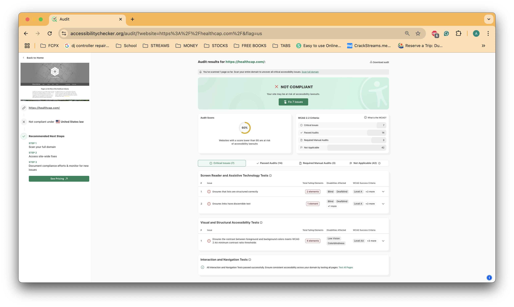

Name: HealthCap
Target Audience: Healthcare providers, senior living organizations, and insurance professionals.
The site is most likely a hierarchical organization. There is a clear home page navigation links to major site sections.
The site uses Repetition effectively. For example, the same grey and yellow color scheme are used consistently throughout the pages to create a unified look.
According to the Accessibility Checker, the site scored 60%.
The site is effective in providing information about their real estate solutions to the healthcare industry. It highlights several properties under their belt.
Users can navigate the site quickly through the top navigation links. Important information is accessible within 1-2 clicks.
The site has a professional appearance that is appropriate for the healthcare insurance industry. However, much of the content and functionality beyond the homepage is limited without access to the member or client portals, which may leave general visitors with minimal information.
One improvement HealthCap could make is to fix the alignment of the main section's text. On the homepage, the primary content text is not aligned consistently with the rest of the page.
Below is a screenshot of the HealthCap website with accessibility highlights:
